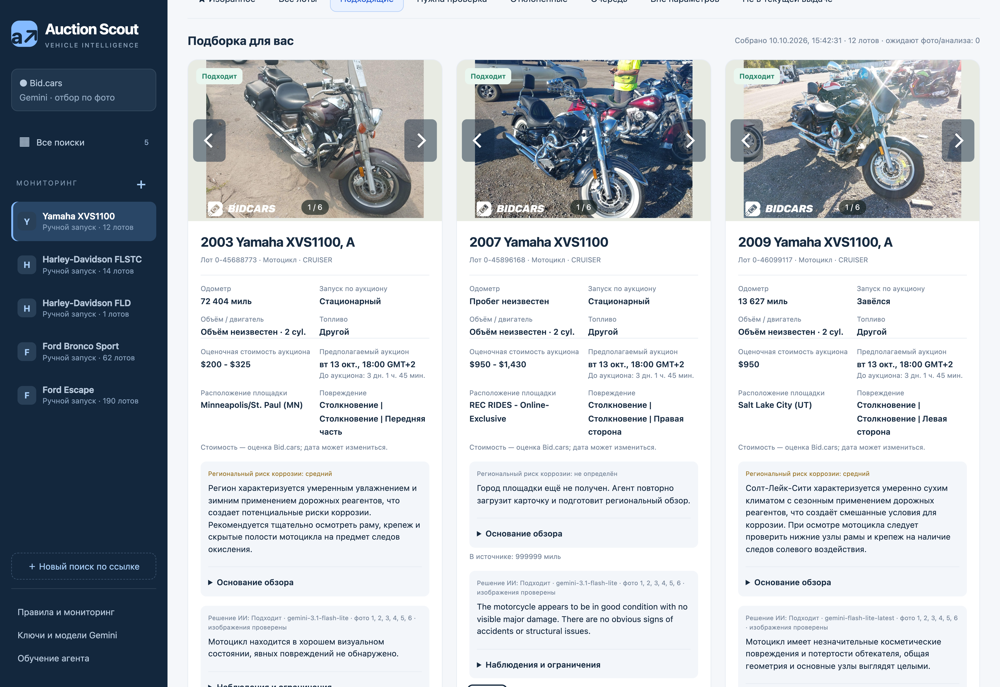
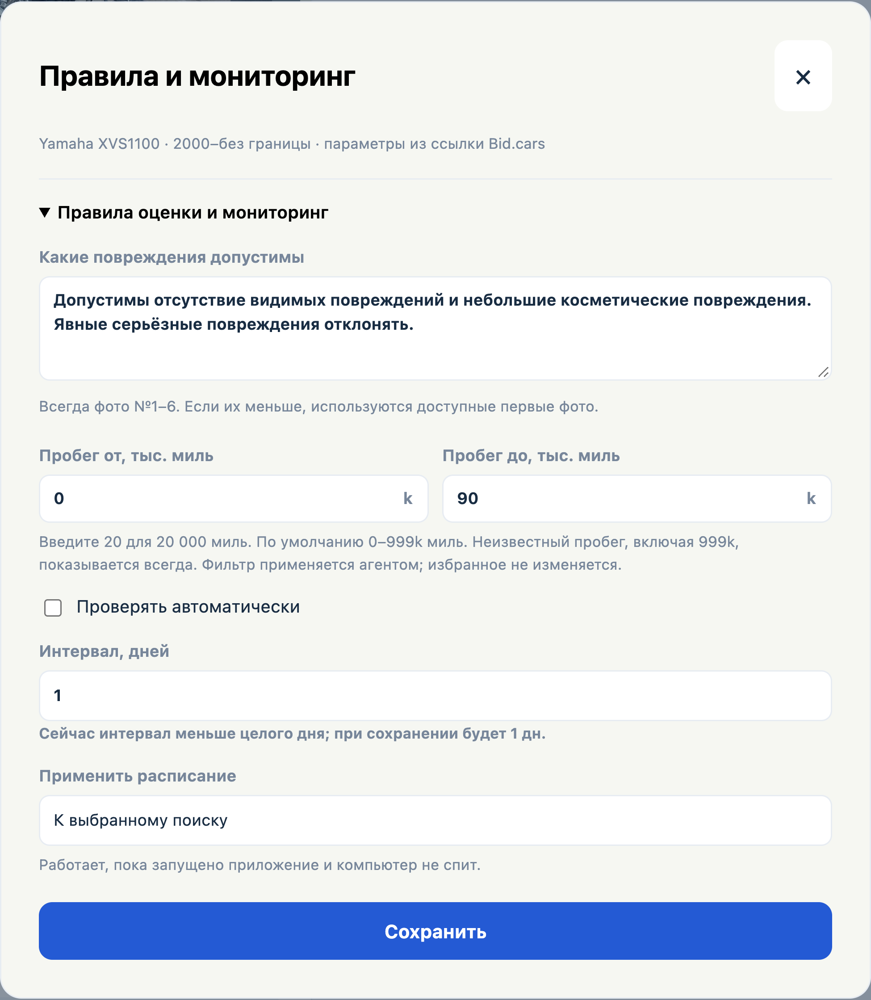
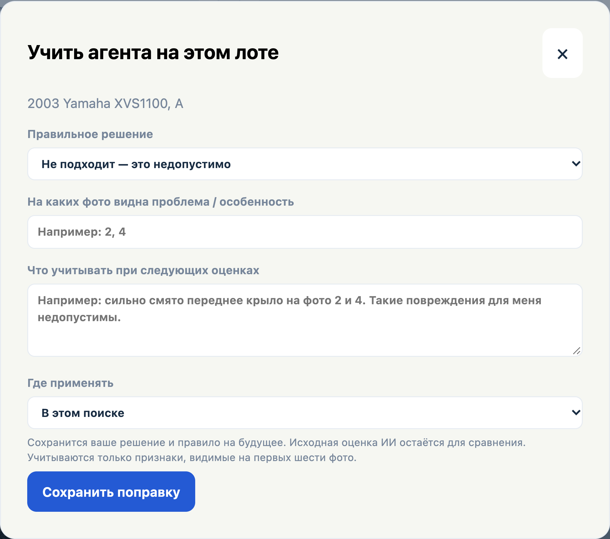
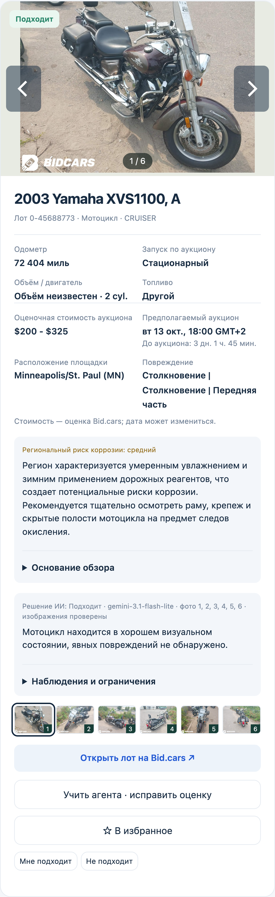
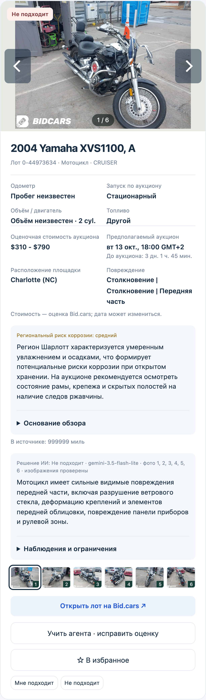
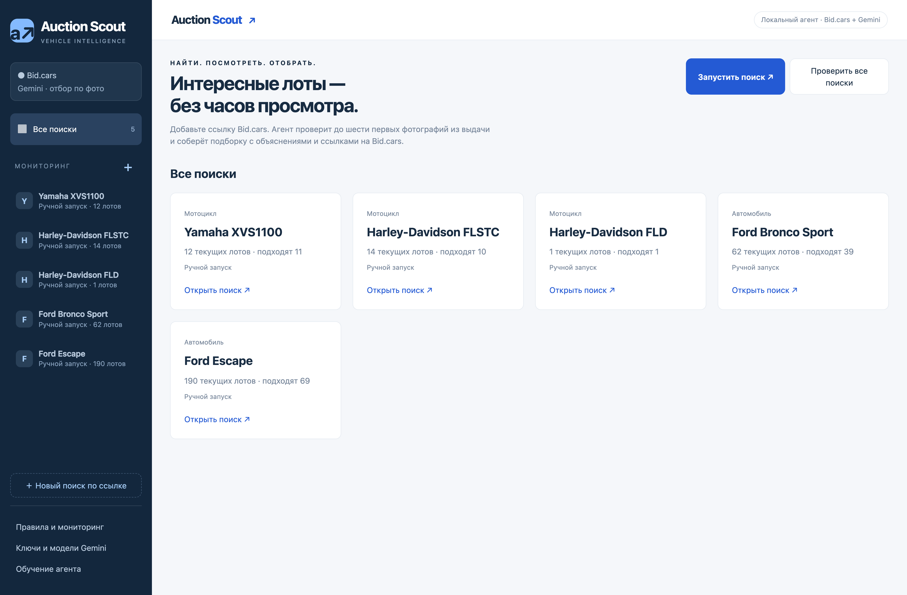

AUCTION SCOUT / ИИ-ОТБОР АУКЦИОННЫХ ЛОТОВ
AI-агент для поиска авто
и оценки повреждений по фото.
Разработал Auction Scout для заказчика, который ищет автомобили и мотоциклы на аукционах. Агент собирает объявления Bid.cars и отбирает лоты по характеристикам и допустимым повреждениям. Вместо просмотра всей выдачи заказчик получает подборку с объяснением каждого решения.
Готовый проект · протестирован заказчиком
Посмотреть интерфейс ↓
01 / ЗАДАЧА
Обычных фильтров недостаточно
Марку, модель и пробег можно задать в поиске. С состоянием сложнее: отсутствующий бампер для одного покупателя допустим, а деформация кузова — уже причина отказа. Заказчику нужен был регулярный поиск с таким первичным отбором. Я разобрал его требования к повреждениям и перевёл их в правила, которые агент применяет к данным аукциона и фотографиям.
02 / РЕШЕНИЕ
Что делает приложение

03 / ОБРАТНАЯ СВЯЗЬ
Критерии можно уточнять по ходу работы
Для автомобилей заказчик допускает отсутствие наружных деталей, но не серьёзную деформацию несущего кузова. Эти ситуации важно различать: отсутствие бампера само по себе не доказывает повреждение силовых элементов. Я предусмотрел корректировку на конкретном лоте: заказчик меняет решение, объясняет причину и выбирает, где применять новое правило. Агент учитывает уточнение при следующих оценках, а прежний ответ остаётся доступен для сравнения.
Поправки хранятся как правила и передаются в контекст Gemini. Это память предпочтений, а не переобучение модели.

04 / ИНЖЕНЕРИЯ
Какие задачи я решил при разработке
05 / РЕЗУЛЬТАТ
Рабочий инструмент для первичного отбора
Заказчик протестировал готовое приложение. В нём можно вести несколько поисков, просматривать отобранные лоты и проверять причины отказов. Подборки и поправки сохраняются между запусками; проверки по расписанию выполняются, пока приложение работает. Окончательное решение о конкретном автомобиле или мотоцикле принимает человек.



Проверка нового способа сбора
10 октября 2026: Ford Escape — 322 объявления с семи страниц получены и разобраны за 4,23 секунды. Это один контрольный запуск сборщика; загрузка фото и анализ Gemini в замер не входят.
Перед обновлением кейса повторно пройдены 78 автоматических тестов: фильтры, работа с данными, фотографии и обработка ошибок. На странице показаны настоящие экраны приложения.
Визуальная оценка помогает первичному отбору и не заменяет технический осмотр. Для анализа фотографии отправляются Gemini. Доступность источника может меняться; длительная непрерывная работа нового HTTP-сборщика пока не измерена.
Интерфейс приложения — на русском. Описание проекта подготовлено на русском и английском.